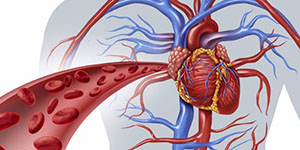
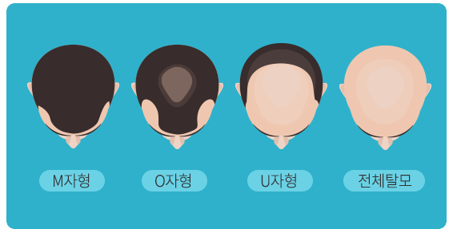
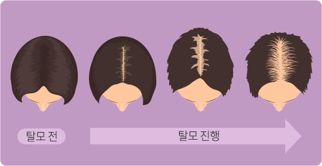
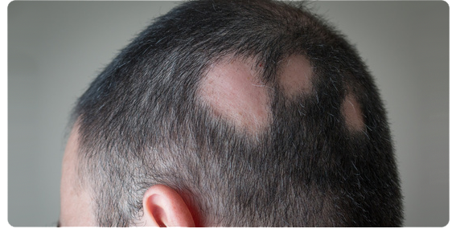

-
탈모의 원인은?
탈모는 모발생성에 필요한 영양공급과 신진대사가 원활하게 이루어지지 않아 생기는 '진행성 질환'입니다.
서양인에 비해 모발 밀도가 낮은 우리나라 사람의 경우 5만~7만개 정도의 머리카락이 있으며 하루에 약 50~70개까지의 머리카락이 빠지는 것은 정상적인 현상입니다. 따라서 자고 나서나 머리를 감을 때 빠지는 머리카락의 수가 100개가 넘으면 병적인 원인에 의한 것일 가능성이 높으므로 의사와 상담해 보는 것이 좋습니다.
탈모의 원인
-
1유전
여러개의 유전자가 간접적으로 탈모에 영향을 미침
-

2혈액순환 장애
모근으로 영양분 공급이 어려움
-
3스트레스
만병의 근원으로 탈모의 진행속도를 가속화하는 작용
-
4과도한 헤어제품
화학성분이 두피에 남게 되어 모낭염, 모발 손상, 탈모 등 문제점 발생
-
5피부질환
두피에 발생하는 두부 백선 및 아토피성 피부염 등 피부질환 문제
-
6영양불량
과도한 다이어트로 필수적인 영양이 부족
탈모의 유형
-

1. 남성 탈모
남성형 탈모는 남성호르몬인 안드로겐이 모낭 세포의 대사에 관여하면서 발생합니다. 모발이 점차 가늘어지면서 안면과 두피의 경계선이 점점 뒤로 물러나 이마가 넓어지며 두피 중앙의 굵은 머리가 점점 빠져 결국 대머리로 진행됩니다. 이마가 점점 넓어지기 시작하다 이마 양 옆이 알파벳 M자처럼 탈모가 진행되는 M자형 탈모와 정수리 부위를 중심으로 동그랗게 나타나는 O자형 탈모가 있습니다. U자형 탈모는 뒷머리조차 없는 형태로 전체 탈모라고 볼 수 있습니다.
-
2. 여성 탈모
여성형 탈모는 남성 호르몬에 대한 민감성이 유전되어 발생하는 탈모 증상입니다. 폐경기와 같은 호르몬의 변화, 심리적 스트레스, 질환 약물의 부작용, 임신과 출산, 무리하나 다이어트, 잦은 염색과 파마, 철분 결핍 등에 의해 일어납니다.열성 탈모는 남자와는 달리 일정한 형태가 없이 머리 전반적으로 탈모가 발생하며 주로 중앙부위 모발이 점차 가늘어지면서 시작됩니다. 잦은 파마나 탈색, 염색으로 인해 모발과 두피가 지속적으로 손상을 받으면 탈모를 더욱 악화시킬 수 있습니다.
 -

3. 원형 탈모
일반적으로 원형의 모양으로 모발이 갑자기 빠지는 증상이 특징입니다. 심한 경우 두피의 모발 전체가 빠지기도 하고 눈썹, 속눈썹, 체모가 빠질 수도 있습니다. 모발은 평균 20대 중반을 기준으로 하여 모모세포의 노화과정이 서서히 나타나게 됩니다. 이때 모발의 굵기가 점점 얇아지는 연모화 현상이 나타납니다. 60세 이후에는 그 변화의 속도가 더욱 빨라집니다.
탈모치료 프로그램
탈모치료 프로그램 특징
| 특징 |
|---|
일반적인 탈모약물 주입시 두피의 자극으로 재생효과를 높이는 침요법 활용 |
옥타우수, 메조건, MTS등을 고객의 상황에 맞는 고객 맞춤 탈모치료로 더욱 빠른 탈모 치료를 도모 |
고주파, LED레이저 등 다양한 두피와 모발 의료기기로 치료 진행 |
일반적인 두피에 대한 케어는 기본적으로 진행 |
줄기세포, 레이저 시술과 다륜침 시술 등의 체계적인 탈모 치료로 탈모 개선과 예방 |
탈모치료 프로그램
| 치료목록 | 치료내용 |
|---|---|
| 성장인자 촉진 치료 | 성장인자를 촉진시켜 퇴화된 모근을 살려내는 치료방법입니다. 모근을 살려내고 탈모를 예방할 수 있습니다. |
| 다양한 레이저 치료와 다륜침 시술 | 다양한 레이저를 이용한 탈모치료와 모발에 활용하여 모근의 재생과 강화시킵니다. Octuas와 MTS를 이용한 혈류 개선과 두피재생으로 탈모치료와 모발이식에 활용합니다. |
| 새로운 탈모치료 프로그램 | 체질개선 프로그램, Detox 프로그램, 항노화 프로그램 등과 탈모 유전자 검사 등으로 개인의 탈모 원인을 찾아 맞춤 프로그램으로 30여 가지의 다양한 프로그램을 진행하고 있습니다. |
-
탈모닥터
032-327-4242
부천시 원미구 상동 412-2번지
대명 엔스빌 320호 탈모닥터
사업자 등록번호 : 130-37-85422
대표이사 최정근 -
진료시간
평일 : AM 10 :00 ~ PM 7 : 00
목요일 : AM 10 :00 ~ PM 9 : 00 (야간진료)
토요일 : AM 9:00 ~ PM 01:00
점심시간 : PM 12:00 ~ PM 01:00
※ 일요일, 공휴일은 휴진입니다.
-
오시는 길